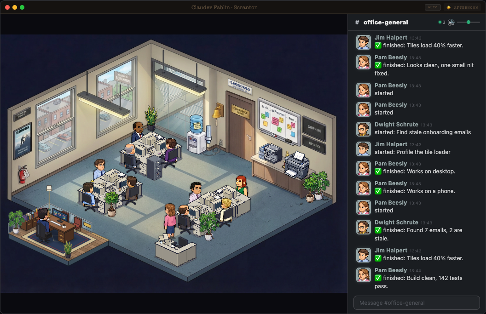

Claude Office
A pixel-art office for Claude Code. Each Claude Code session gets a person at a desk. While it works, they type. When it needs you, they line up at the boss's door.

Give Claude Code this link and say: set this up.
Or paste this:
Set up the Claude Office from https://github.com/Obadaboom/claude-office. Clone it to ~/claude-office and follow its INSTALL.md. Show me any change to my Claude Code settings before you make it. Then start it and open it in my browser.
Works with any Claude Code model.
It adds to the Claude Code you already have. Claude follows INSTALL.md. It asks you before it touches your settings.
What you need
Claude Code. Claude checks and installs the rest (it asks first).
Works on Mac and Linux. On Windows, use WSL.
What you'll see
- The demo first. A second office at http://localhost:3335 with made-up work. Type a task in the chat, like "Add a dark mode toggle". A pretend session builds it, gets reviewed, and waits for you at the door.
- Tapping an option on a note works in demo mode only. We left the real version out on purpose: the session would have to wait for your tap, and while it waits you can't type to it in the Claude app.
- Then your real office at http://localhost:3333. Start a new Claude Code session. A person at a desk starts working.
- Five things in the office open boards: the board on the wall (To-do), the TV (Shipping), the boss's desk (Decisions), the poster (Marketing) and the filing cabinet (Older).
- Click people, the coffee, the bell. Type
/the-officein the chat to switch the theme.
Your own boards
The boards read plain markdown in ~/.agent-office/boards. The first start puts three sample projects there. Your edits are never overwritten. The easy way to fill them: ask Claude, "add a task to my office board".
Status queued or building = to do. built or ready = needs you. done, live or shipped = off the board.
Anything older than 7 days moves to the filing cabinet. The file shapes are in the README.
Privacy
- Everything stays on your computer. The office only listens on 127.0.0.1.
- The hook sends small events to it. Only these:
- the event name and the session id
- the paths of the session's transcript files
- the name of a skill or MCP tool
- a file's name, never its path or its contents (like "reading App.tsx")
- a search pattern, up to 40 characters
- a command's description, up to 60 characters, never the command
- a subagent's type, its description up to 80 characters, and the first line of its answer up to 100 characters
- It never sends your prompts.
- The office reads your Claude Code session files on your computer to show titles and notes.
- Plain sentences on the boards are optional and off by default (see the README). If you turn them on, your board lines go to Claude through your own
claudecommand.
How to remove it
- Stop the office (Ctrl+C where it runs).
- Take the hooks out of
~/.claude/settings.json: delete the entries whose command ends inagent-tracker.sh. Or restore the backup the installer made next to it (settings.json.backup.<time>). Or ask Claude to do it. - Delete
~/claude-officeand~/.agent-office.
Credit
Built on Claude-Office by W17ANT, MIT license. The Dunder Mifflin theme and the cast come from there.
By hand
If you would rather not use Claude:
Unzip it and rename the folder to ~/claude-office. Then follow the steps below, from cd ~/claude-office on.
Or with git clone:
git clone https://github.com/Obadaboom/claude-office ~/claude-office
cd ~/claude-office
npm ci
npm run install-hooks # adds the hook to ~/.claude/settings.json (makes a backup first)
npm run demo # demo: open http://localhost:3335/?theme=office
npm run dev:all # real office: open http://localhost:3333/?theme=office